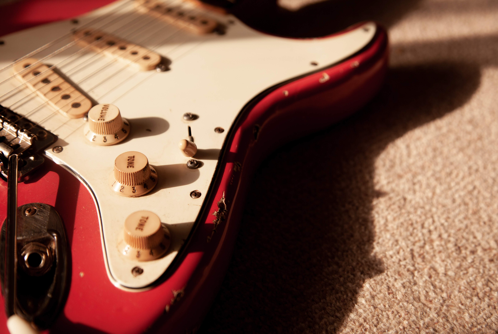
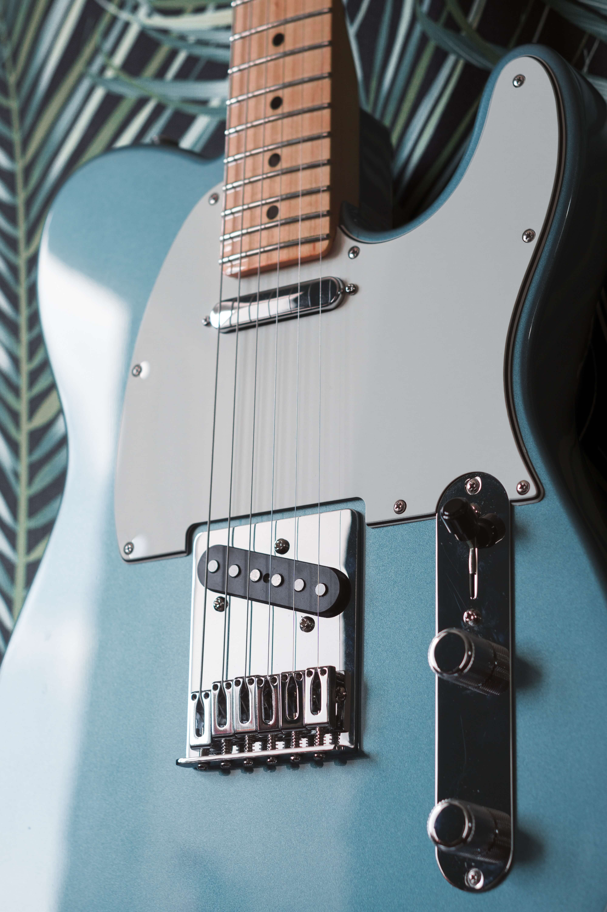

Lesser know facts about the legend
Leo, the inventor of the electric guitar, will fondly be rembered by millionsof guitar players around the world.
- Leo loved tinkering with electronics
- He was born in a barn in 1909, and his parents were in agriculture.
- He didn’t play guitar, but did play saxophone, and dabbled in piano.
- His uncle is greatly responsible for Leo’s love of electronics
- A health condition prevented him from being drafted for World War II
- He was an accounting major
- He married twice, but had no children
- He loved cameras and boats
- He died in 1991 after battling parkinson’s disease.
- Fender is the most recognisable guitar brand in the world
Clarence Leonidas Fender (August 10, 1909 – March 21, 1991) was an American inventor known for founding the Fender Musical Instruments Corporation and designing the company's early models, the Fender Telecaster, Fender Precision Bass, and Fender Stratocaster.
His competitors include Gibson, Gretsch and PRS.
THE STRATOCASTER
TIMELESS TELECASTER
 Back To TopTHE PRECISION BASS
Back To TopThe Telecaster
The Fender Telecaster was developed by Leo Fender in Fullerton, California, in 1950. In the period roughly between 1932 and 1949, several craftsmen and companies experimented with solid-body electric guitars, but none had made a significant impact on the market.